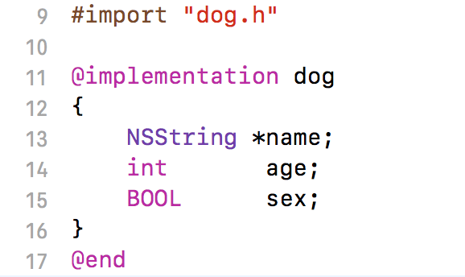
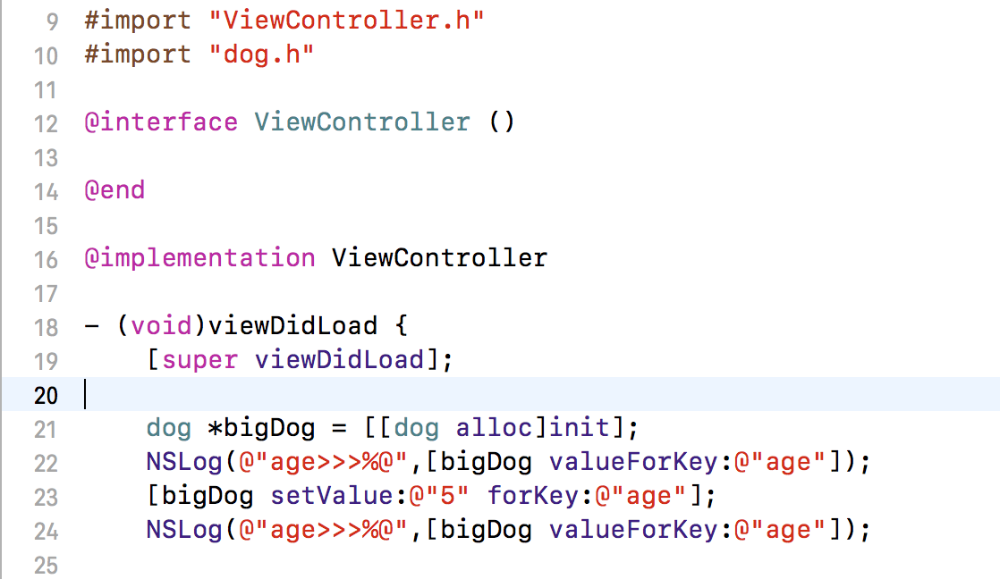
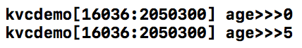
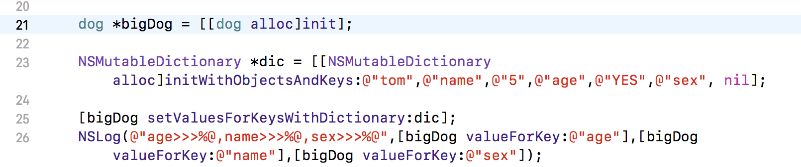
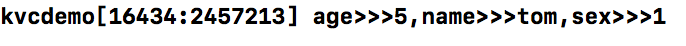

iOS开发日常之 KVC总结
Object-C这是一个面对对象的语言 ,每个对象身上都带着非常多的属性 ,而KVC就是可以对每个对象上的属性操作自如的一个东西!
KVC 全称 Key Value Coding 键值编码
KVC的操作方法由NSKeyValueCoding提供，而他是NSObject的类别，也就是说ObjC中几乎所有的对象都支持KVC操作。还有就是 ,KVC可以直接把dic字典中的值赋值到一个对象的属性上 ,这三个方法分别是:
Foundation >> NSKeyValueCoding.h >>
- (void)setValue:(nullable id)value forKey:(NSString *)key;
- (nullable id)valueForKey:(NSString *)key;
- (void)setValuesForKeysWithDictionary:(NSDictionary
具体其他方法 ,请参考系统的NSKeyValueCoding.h
下面我来具体讲解.
一个对象声明的属性分为共有属性和私有属性 ,共有的属性是可以让别的类看到,调用的.而私有的属性是只能当前类调用的属性.然而对于KVC来说 ,同样可以对一个对象的私有属性进行读写.
首先我们先创建一个dog的类 ,并且在.m中写上私有属性:

{kind=link}
接着在另一个类中导入这个dog类 ,并且调用KVC的那两个取值与赋值的方法 ,然后查看输出结果


{kind=link}
{kind=link}
根据上面的小例子可以看出 ,不管有没有申明过get和set方法 ,也没有通过@property申明属性的情况下 ,依然可以运用KVC的机智直接读取到私有的属性 ,并且可以进行赋值更改操作.可见KVC的强大之处!
那么接下来再来说说KVC更强大的一个用处: 直接操作dic字典进行对象的赋值.
同样是刚才dog类 ,在另一个类中声明一个dic ,然后调用kvc中的使用dic赋值的方法,并且输出结果  
{kind=link}
{kind=link}
是的 ,kvc就是这么强大 !当服务端返回给我们json数据的时候 ,我们就可以直接将数据赋值到我们建立的对象属性上 .需要注意 :dic中的key值需要与对象的属性一一对应 ,可以少不能对 ,也不能错 ,否则就会出现崩溃的情况了
除了我说的这三个比较常用的方法 ,当然kvc也有其他很多方法 ,详细请大家参考系统类中的NSKeyValueCoding.h
如有需要 , 点击此下载代码源文件